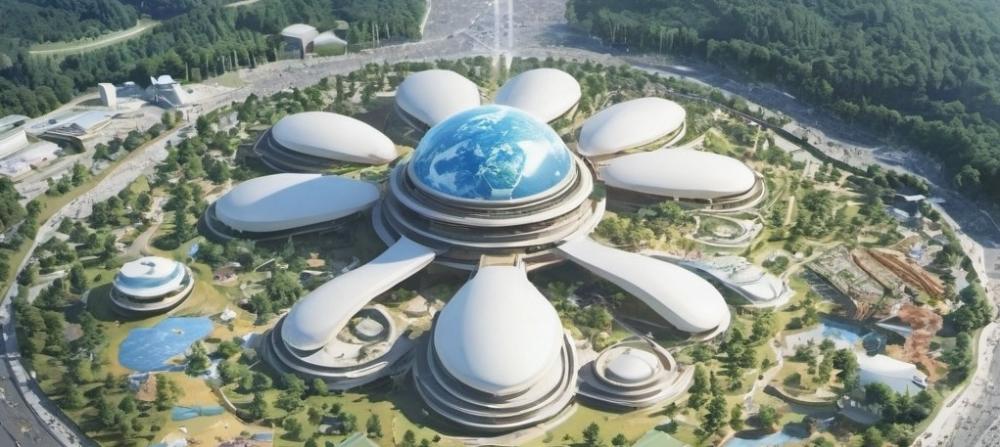

世界万国博覧会2035年、奈良県を舞台に、過去、現在、未来が融合する特別な機会が訪れました。奈良は日本の古都として長い歴史を持ち、その豊かな文化遺産と自然美が現代技術と出会うことで、新たな調和が生まれます。この万博では、人々が未来を共創し、持続可能で包摂的な社会のビジョンを共有する場となります。
奈良の街並みは、古代の風景と最新のスマート技術が共存する未来都市のモデルを提供しています。伝統的な木造建築に、エネルギー効率の高いソーラーパネルや、AIを活用したインフラが組み込まれ、歴史と革新が調和した新しいライフスタイルが提案されています。この都市デザインは、次世代の住みやすさと環境保護を両立させることを目指しています。